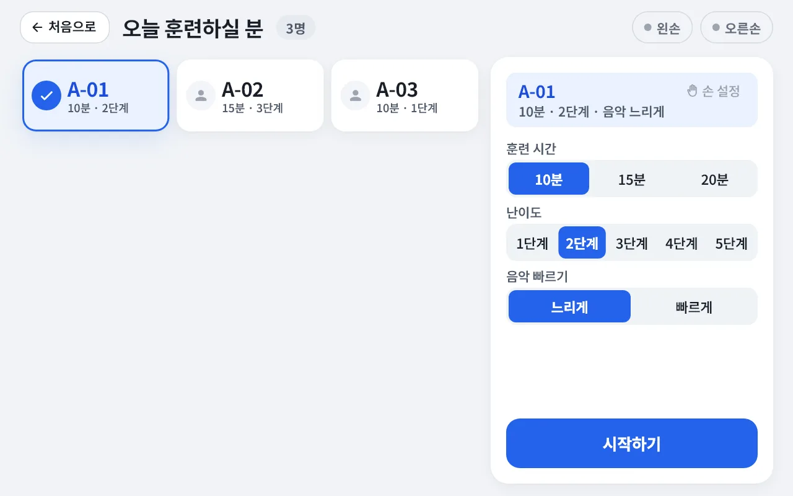
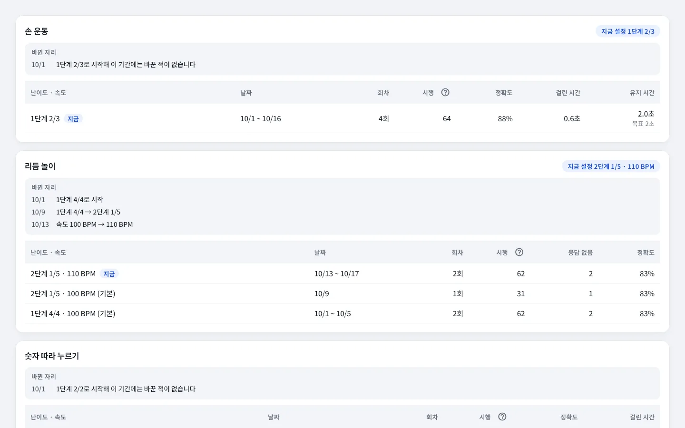
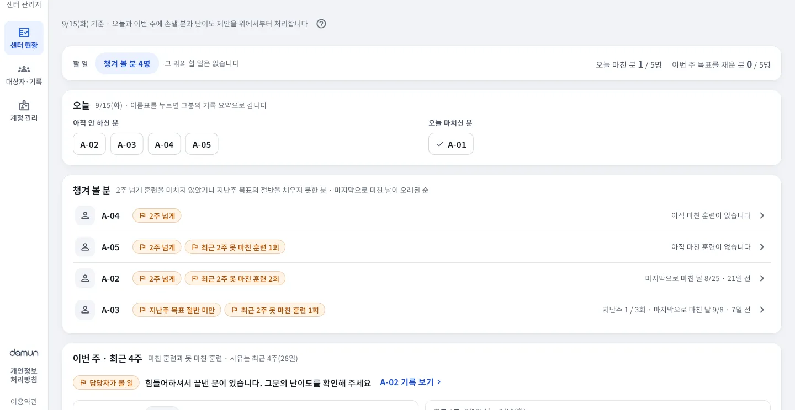

서비스 형태 요약
- 1
누가 쓰나요
프로그램 담당자와 어르신
복지관 · 경로당 · 주·야간보호센터 · 요양시설
- 2
무엇으로 하나요
그립 + 태블릿 앱 + 관리자 웹
여러 분의 기록을 한곳에서 관리합니다
- 3
어떻게 이용하나요
담당자가 진행합니다
훈련은 태블릿으로, 기록과 난이도 제안은 관리자 웹으로
그림은 이해를 돕기 위한 개념 예시이며, 기기 화면은 개발 중인 앱의 실제 화면입니다.
그립, 태블릿 앱, 관리자 웹이 한 세트입니다
-

햅틱 그립
왼손·오른손 한 쌍. 손가락마다 따로 눌리는 레버가 있고, 신호는 진동과 화면으로 알려 줍니다. 블루투스로 태블릿과 이어집니다.
-

태블릿 앱
안드로이드 태블릿에서 세 가지 활동과 결과 화면을 보여 주고, 기록은 인터넷으로 관리자 웹에 보냅니다.
-

관리자 웹
인터넷 브라우저로 접속해 기록·리포트·계정을 관리합니다.
태블릿 하나로 이렇게 진행합니다
훈련 시간과 난이도를 고르면 설명부터 연습까지 앱이 안내합니다.
대상자 고르기
담당자가 태블릿에서 대상자와 훈련 시간을 고릅니다.
기기 확인
여덟 손가락을 하나씩 눌러 그림과 번호를 확인합니다.
설명·연습
할 일을 소리로 읽어 드리고, 연습한 뒤에 시작합니다.
활동·결과
세 가지 활동을 마치면 결과를 보여 드리고 기록을 남깁니다.
-
앱이 안내하고 진행합니다
진행해 줄 사람이 없어도 훈련이 멈추지 않도록, 할 일을 소리로 읽어 드리고 큰 글씨로 한 번에 하나만 보여 드립니다. 어르신은 언제든 「도움이 필요해요」를 누를 수 있고, 담당자는 태블릿 하나로 프로그램을 진행합니다.
-
게임처럼 즐기고, 난이도를 제안합니다
음악·빛·진동에 맞춰 누르는 활동이라 반복해도 즐길 수 있습니다. 관리자 웹이 수행 기록을 바탕으로 다음 난이도를 제안하고, 정하는 것은 담당자입니다.
-
손가락별로 자동 기록합니다
활동이 끝나면 몇 개 맞았는지 바로 보여 드리고, 참여 기록은 관리자 웹에 모여 콘텐츠별 기록과 PDF 리포트로 나옵니다. 인터넷이 잠시 끊겨도 태블릿에 모아 두었다가 보냅니다.
손가락별로 쌓이는 기록
오늘 훈련할 분부터 대상자별 기록까지, 인터넷 브라우저 하나로 확인합니다.
기록하는 항목 회차 수 · 문제 수 · 정확도 · 걸린 시간 · 유지 시간 · 손가락별 결과
- 센터 현황 — 오늘 훈련할 분과 챙겨 볼 분을 한눈에
- 대상자별 기록 — 콘텐츠마다 난이도 추이와 회차별 기록
- 난이도 제안 — 기록을 바탕으로 올리거나 내릴 분을 권하고, 적용은 담당자가 정합니다
- 세션 이력 · PDF 리포트 · CSV 내보내기, 센터·담당자 계정과 태블릿 연결 관리
- 기록손가락별 수행 기록과 리포트
- 제안수행 기록을 바탕으로 난이도·속도 제안 (적용은 담당자)
- 계획기록이 쌓이면 개인별 훈련 구성 추천 (AI 맞춤)
수행 기록 안내이 값은 훈련을 어떻게 수행했는지에 대한 기록입니다. 인지기능이나 질환 상태에 대한 진단이 아니며, 의학적 판단은 담당 의료인의 몫입니다.

도입 안내
기관별 운영 방식과 제공 기능은 제품 사양에 맞춰 협의합니다.
문의와 상담
센터 규모와 운영 방식을 듣고 필요한 구성을 함께 살펴봅니다.
구성 협의
그립과 태블릿 수, 운영 방식, 제공 기능을 협의합니다.
설치와 현장 교육
설치하는 날 담당자께 30분 교육을 드립니다.
운영 시작
담당자가 태블릿으로 프로그램을 진행하고, 기록은 관리자 웹에 모입니다.
도입하면 드리는 자료
- 사용 설명서 — 태블릿(담당자용)과 관리자 웹 두 권
- 현장 교육 안내 — 설치한 날 30분 교육용
- 시작 안내 한 장 — 관리자 웹 주소와 첫날 할 일
- 이용자 동의서 양식 — 어르신(또는 보호자)께 받는 양식
- 식별 번호 대장 양식 — 번호와 어르신을 맞춰 적는 엑셀
자주 묻는 질문
어떤 곳에서 쓰나요?
복지관, 경로당, 주·야간보호센터, 요양시설의 프로그램 담당자가 어르신과 함께 쓰도록 만들었습니다. 손과 머리를 함께 움직이는 활동을 즐기고 싶은 어르신이 사용하는 분입니다.
무엇이 필요한가요?
햅틱 그립 한 쌍(왼손·오른손), 그립과 짝지은 안드로이드 태블릿 한 대, 그리고 관리자 웹을 열 인터넷 브라우저가 필요합니다.
인터넷이 잠시 끊겨도 태블릿이 기록을 모아 두었다가, 다시 연결되면 저절로 보냅니다.
어르신 이름이 기록에 남나요?
이용자는 이름 대신 센터가 정한 식별 번호(예: A-01)로 등록합니다. 태블릿에도 서버에도 번호만 남습니다. 번호와 어르신을 맞춘 표는 센터 업무용 PC 한 곳에서만 보관하도록 엑셀 양식을 드립니다.
한 손만 쓰시거나 빼고 싶은 손가락이 있는 분도 쓸 수 있나요?
어르신마다 「한 손으로 하시는 분」과 「훈련에서 뺄 손가락」을 설정할 수 있습니다. 설정은 그분에게만 적용되고 다음 분에게는 남지 않습니다.
너무 어렵거나 쉬우면 어떻게 하나요?
훈련 시간과 1~5단계 난이도를 고를 수 있고, 리듬 놀이의 음악 빠르기는 느리게·빠르게 중에서 고릅니다. 관리자 웹은 수행 기록을 바탕으로 난이도를 올려 볼 만한 분을 알려 주며, 정하는 것은 담당자입니다.
소리나 진동이 불편해하시면요?
담당자 설정에서 소리 크기와 안내 말소리, 누를 때 진동을 줄이거나 끌 수 있습니다.
어르신이 화면을 잘못 누르면요?
훈련 중 어르신이 누를 수 있는 화면 단추는 「도움이 필요해요」뿐입니다. 훈련을 끝내거나 설정을 바꾸는 일은 담당자가 합니다.
동의를 철회한 분의 기록은 어떻게 하나요?
다문에 알려 주시면 태블릿에 남은 기록과 서버의 기록을 삭제합니다.
Rehaptic은 의료기기인가요?
Rehaptic은 의료기기가 아니며 질병을 진단·치료·예방하지 않습니다. 관리자 웹의 값은 훈련을 어떻게 수행했는지에 대한 기록이고, 의학적 판단은 담당 의료인의 몫입니다.
비용은 어떻게 되나요?
기관 규모와 구성에 맞춰 협의합니다. info@damun.asia로 문의해 주세요.